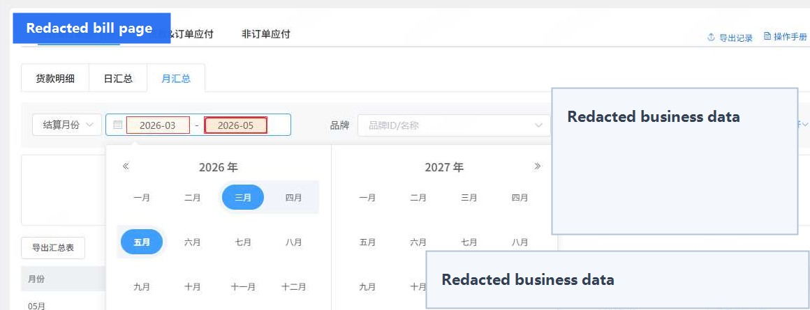
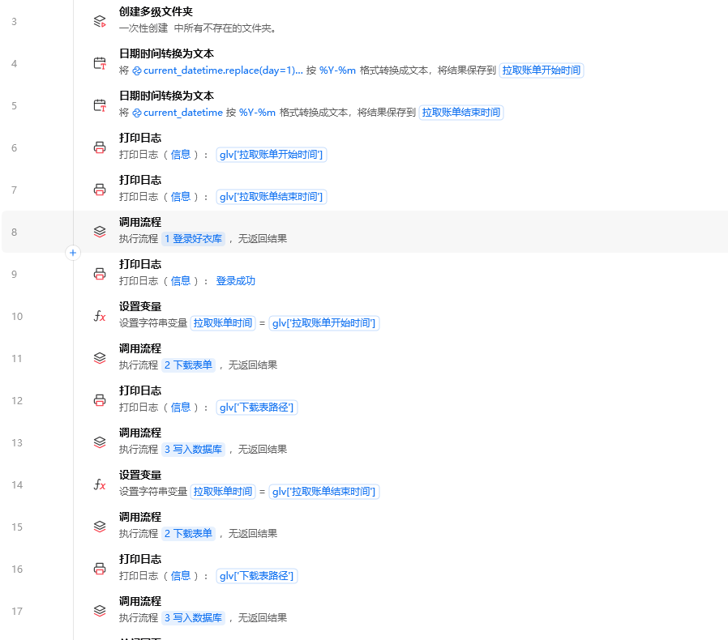
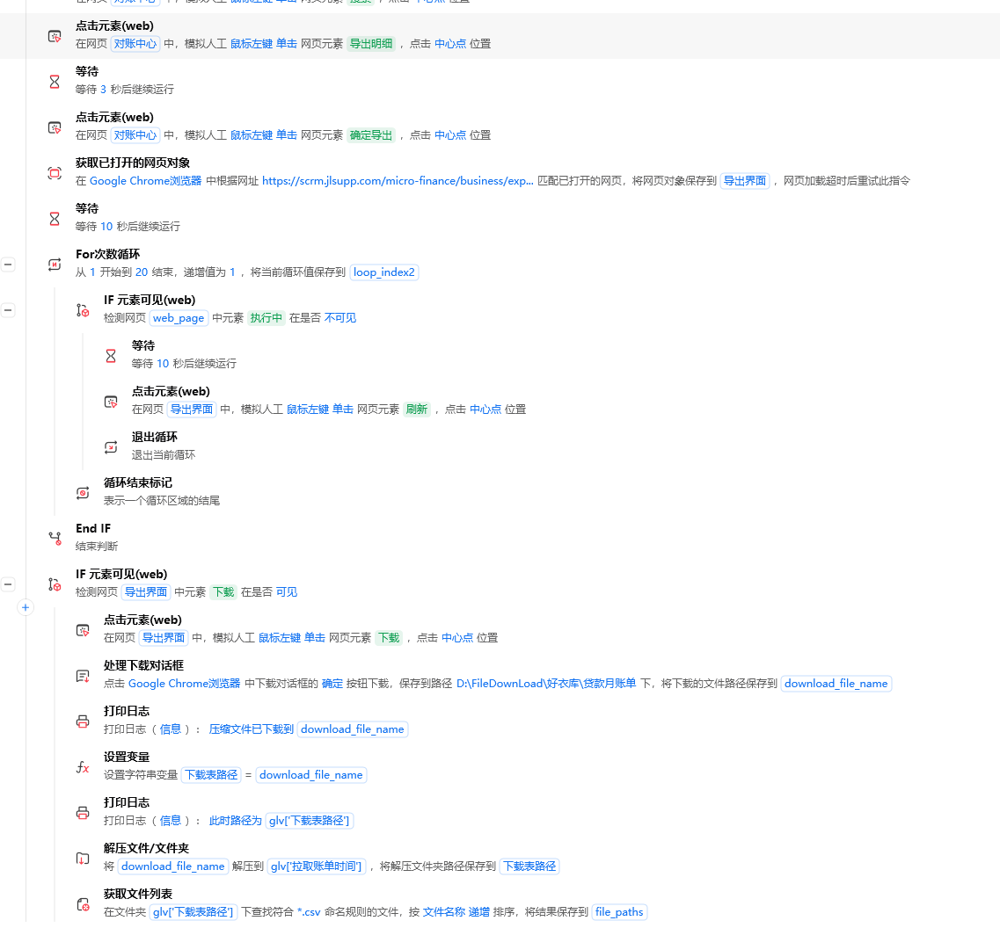
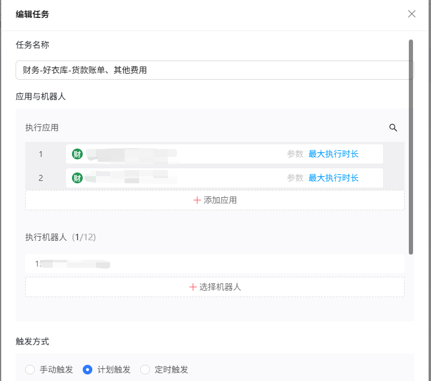

流程入口阶段
账单下载与影刀流程编排
目标
让 RPA 稳定完成目标月份选择、网页导出等待、压缩包下载、解压和 CSV 完整路径获取，为后续清洗和写库提供可靠输入。
1. 先确认真实业务页面
账单自动化从页面筛选条件开始。流程先确定账单月份，再进入导出动作，不能只录一串固定点击。

2. 主流程负责调度
主流程先生成本次拉取的开始和结束月份，再调用登录、下载和写库子流程。这样月份变量和文件路径变量可以在多个子流程间复用。

3. 下载流程要处理等待和文件落地
下载阶段除了点击导出，还要判断导出入口是否出现、循环等待下载按钮、保存压缩包、解压文件并匹配 CSV 文件路径。

4. 自动化任务设置
流程具备任务触发入口后，后续可以把手工执行逐步沉淀为计划触发，并明确任务执行应用与机器人资源。

5. 阶段验证
| 检查点 | 成功标准 |
|---|---|
| 账单月份 | 生成的月份变量与本次处理范围一致 |
| 导出等待 | 导出记录出现后能继续进入下载分支 |
| 下载文件 | 压缩包真实落地并可解压 |
| CSV 路径 | 后续步骤拿到完整 CSV 文件路径，而不是目录对象 |
经验
RPA 的稳定性不只在元素点击，还在变量、等待、失败分支和文件路径这几个交界点。